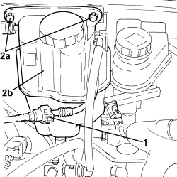

1080E50 INTERMEDIATE FUEL VAPOUR PIPE R R
- Path
- Procedures > 10 ENGINE > 1080 EMISSION CONTROL SYSTEM > 1080E EVAPORATION CONTROL SYSTEM > 1080E50 INTERMEDIATE FUEL VAPOUR PIPE R R
- Kind
- repair procedure (removal / refitting; the operation number is the code)
- Applies to
- engines: 2.2 JTS, 3.2 JTS; all production periods
- Interactive page
- https://sloeber94.github.io/elrnDB-aBrrSpdr/en/#/946001981
Applies to: engines: 3.2 JTS; all production periods
 Removing
Removing
 Refitting
RefittingOp. 1040E22 FUEL PIPE PROTECTION - R.R
Op. 1072B50 AIR CHAMBER - R.R.
1. Disconnect the rear quick coupling of the intermediate fuel vapour pipe.

Applies to: engines: 3.2 JTS; all production periods
- Release the intermediate fuel vapour pipe from the underbody fastenings.
1. Undo the fixing nuts and move the engine coolant reservoir to one side.

Applies to: engines: 3.2 JTS; all production periods
1. Release the rigid section of intermediate fuel vapour pipe (1a) from fastening clips (1b) and remove it.

Applies to: engines: 3.2 JTS; all production periods
Refitting
Removing- Place the intermediate fuel vapour pipe in position, secure it to the bodyshell using the clips and connect it to the rear vapour pipe.
- Place the engine coolant reservoir on its bracket and secure it using the nuts.
Applies to: engines: 2.2 JTS; all production periods
Removing
RefittingOp. 1040E22 FUEL PIPE PROTECTION - R.R
1. Disconnect the intermediate fuel vapour pipe quick coupling.

Applies to: engines: 2.2 JTS; all production periods
- Release the intermediate fuel supply pipe from the underbody fastenings.
1. Disconnect the intermediate fuel vapour pipe quick coupling.
2. Undo bolts (2a) and move engine coolant supply reservoir (2b) aside.

Applies to: engines: 2.2 JTS; all production periods
1. Undo bolts (1a) and move the two electrical wiring mounting brackets (1b) aside.

Applies to: engines: 2.2 JTS; all production periods
- Release the intermediate fuel vapour pipe from the fastenings on the engine compartment bulkhead and remove.
Applies to: engines: 2.2 JTS; all production periods
Refitting
Removing- Place the intermediate fuel vapour pipe in its housing and secure it to the fastenings in the engine bulkhead.
- Refit both electrical connection brackets in their seats and secure with bolts.
- Fit the engine coolant supply reservoir in place and secure it using the bolts.
- Connect the intermediate fuel vapour pipe quick coupling.
- Secure the intermediate fuel vapour pipe with the underbody fastenings.
- Connect the intermediate fuel vapour pipe quick coupling.